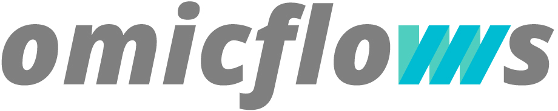
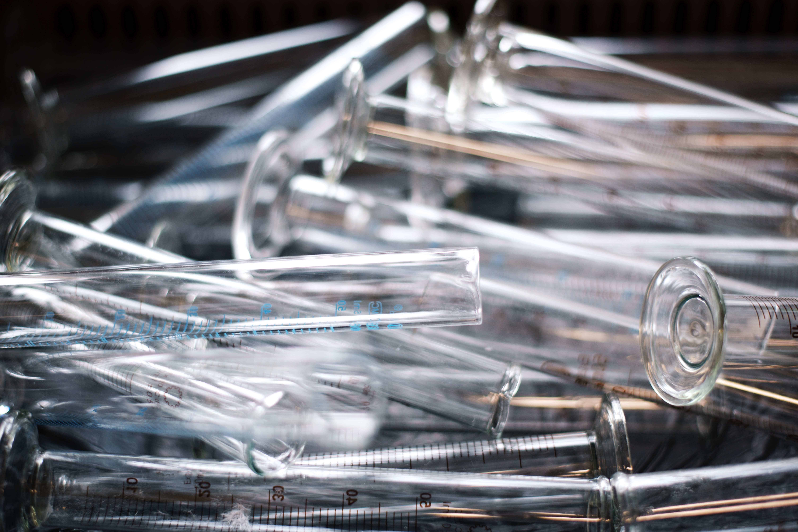

Ready for Science?
Welcome to a platform inspired by the way bioinformatics work. Supported by open source technologies and open standards. Here you are able to create, edit and reuse workflows created by scientists around the world.

The best metagenomic analysis
Omicflows let you easily customize your analysis, and allows you to focus on what matters most.
The latest bioinformatics technologies, without the painful technical problems.
OmicFlows allows you to perform your analysis on our high performance servers, and when it's ready we send you the report by mail!
See an example
More from omicflows
Portability is the key
The Common Workflow Language (CWL) is a specification for describing analysis workflows and tools in a way that makes them portable and scalable across a variety of software and hardware environments.

Create your own flows
You can easily customize the analysis workflow to suit your needs.

Perfect for laboratories
We offer a complete plan for the high demand laboratories, and we guarantee that everyone in your laboratory will have the results in the minimum time..

Anything, everywhere
Omic Flows is cross-platform, you can view the status of the analysis from your computer or smartphone.
You can see all the analyzes made from your work, office, or from the comfort of your home.